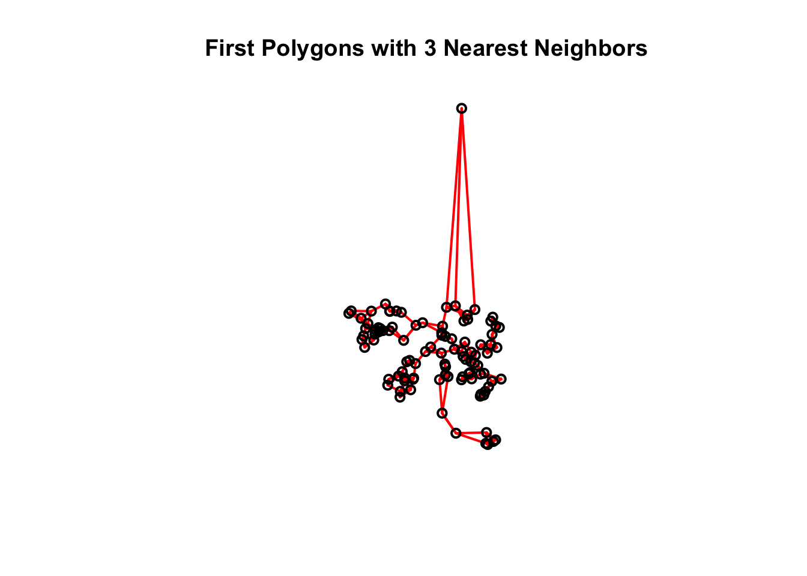
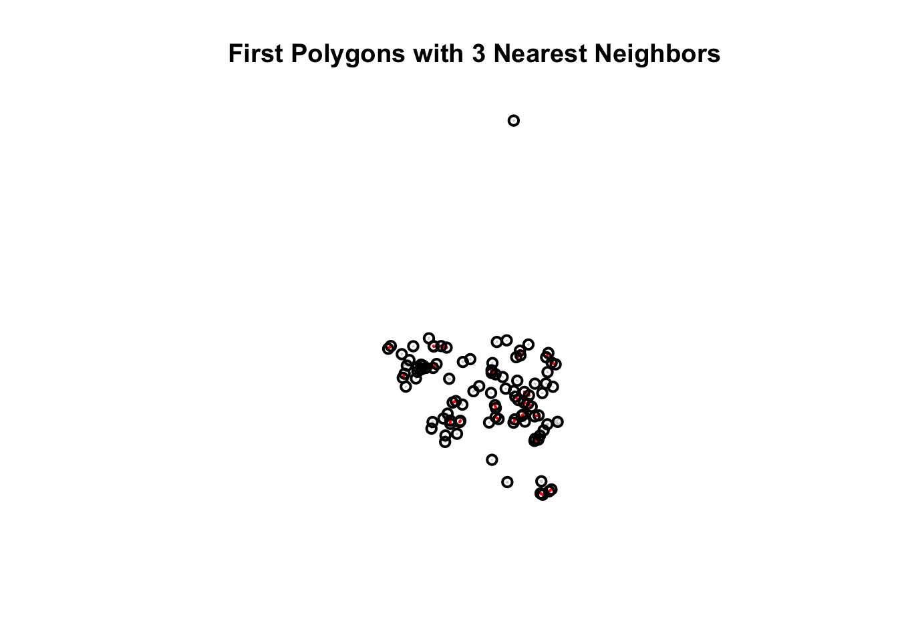

Correlation measures the strength and direction of association between two variables. While Pearson’s correlation requires a linear relationship and normally distributed data, and are measures, making them ideal for analyzing data that may not be linear or normally distributed.
2.1 Spearman’s Rank Correlation
Spearman’s correlation coefficient \(\rho\) is based on data. For two variables \(X\) and \(Y\), we replace each observation by its rank. Spearman’s \(\rho\) is then computed similarly to Pearson’s correlation but on these ranks:
Kendall’s tau \(\tau\) measures how often the order of pairs is preserved between two variables. For \(n\) observations, if we have a pair of observations \((X_i, Y_i)\) and \((X_j, Y_j)\), Kendall’s \(\tau\) counts and pairs. A pair is if \((X_i - X_j)\) and \((Y_i - Y_j)\) have the same sign; otherwise, it is . The formula is:
\(\tau = \frac{\text{(number of concordant pairs)} - \text{(number of discordant pairs)}}{\frac{n(n-1)}{2}}\)
delitos_data %>%st_drop_geometry() %>%select(contains('24')) %>%cor(., method ="kendall", use ="complete.obs") %>%round(., 3) %>%print(.) %>%corrplot(., method ="color", title ="Kendall Correlation", mar=c(0,0,1,0))
Both Spearman’s \(\rho\) and Kendall’s \(\tau\) capture the relationship between two variables. They are more robust to outliers and non-linear relationships than Pearson’s correlation. In the context of areal data (e.g., crime rates, population density across polygons), these measures can reveal how variables co-vary without assuming linearity or normality.
Spatial Neighborhood Matrices
This section is based on Spatial statistics for data science theory and practice with R. See (Moraga 2023).
2.3 Neighbors based on contiguity
Queen Contiguity: Two polygons are considered neighbors if they share any common point (i.e., an edge or a vertex). Mathematically, if polygons ( p_i ) and ( p_j ) touch at any point, then ( A_{ij} = 1 ).
Rook Contiguity: Two polygons are neighbors only if they share a common edge. That is, if polygons ( p_i ) and ( p_j ) share a boundary segment, then ( A_{ij} = 1 ); merely touching at a corner does not count.
nb <- spdep::poly2nb(delitos_data, queen =TRUE)head(nb)
K-Nearest Neighbors: For each polygon, the ( k ) nearest neighbors are identified based on a distance threshold.
Distance Threshold: The distance threshold can be defined as a fixed value or as a function of the average distance between polygons.
# Neighbors based on 3 nearest neighborscoo <-st_centroid(delitos_data)nb <-knn2nb(knearneigh(coo, k =3)) # k number nearest neighbors# Polygons with neighborstable(sapply(nb, length))
3
44325
# Subset data to the first 10 polygonsdelitos_data_10 <- delitos_data[1:100, ]# Recompute neighbor list for these 10 polygons to avoid index mismatchesnb_10 <-knn2nb(knearneigh(st_centroid(delitos_data_10), k =3))# Compute centroids for the 10 polygonscoords_10 <-st_coordinates(st_centroid(delitos_data_10))# 4. Plot the first 10 polygons and overlay neighbor connections in redplot(st_geometry(delitos_data_10), border ="lightgray", main ="First Polygons with 3 Nearest Neighbors")plot.nb(nb_10, coords_10, add =TRUE, col ="red", lwd =2)

2.5 Neighbors based on distance
nb <-dnearneigh(x =st_centroid(delitos_data), d1 =0, d2 =0.4)# Polygons with neighborstable(sapply(nb, length))
# Subset data to the first 10 polygonsdelitos_data_10 <- delitos_data[1:100, ]# Recompute neighbor list for these 10 polygons to avoid index mismatchesnb_10 <-dnearneigh(x =st_centroid(delitos_data_10), d1 =0, d2 =0.4)# Compute centroids for the 10 polygonscoords_10 <-st_coordinates(st_centroid(delitos_data_10))# 4. Plot the first 10 polygons and overlay neighbor connections in redplot(st_geometry(delitos_data_10), border ="lightgray", main ="First Polygons with 3 Nearest Neighbors")plot.nb(nb_10, coords_10, add =TRUE, col ="red", lwd =2)

Determining an Appropriate Upper Distance Bound: To ensure that each area in a spatial dataset has at least (k) neighbors, we can determine an appropriate upper distance bound by first computing the (k) nearest neighbors for each area. For example, using the Queen contiguity method, one may use the function with (k=1) to obtain the nearest neighbor for each polygon. This yields a matrix of neighbor IDs, which is then converted into a neighbor list (of class ) via .
Next, the function computes the distances along the links between each area and its neighbor. By summarizing these distances (e.g., using ), we can observe the range of distances. In the provided example, the summary shows a maximum distance of approximately 0.62. This maximum value is then taken as the upper bound; that is, if we set the threshold at 0.62, every area will have at least one neighbor within that distance. This approach provides a data-driven method to choose a threshold that is neither too restrictive nor too lenient.
# k is the number nearest neighborsnb1 <-knn2nb(knearneigh(coo, k =1))dist1 <-nbdists(nb1, coo)summary(unlist(dist1))
Min. 1st Qu. Median Mean 3rd Qu. Max.
0.001377 0.031220 0.044383 0.053259 0.063116 1.196872